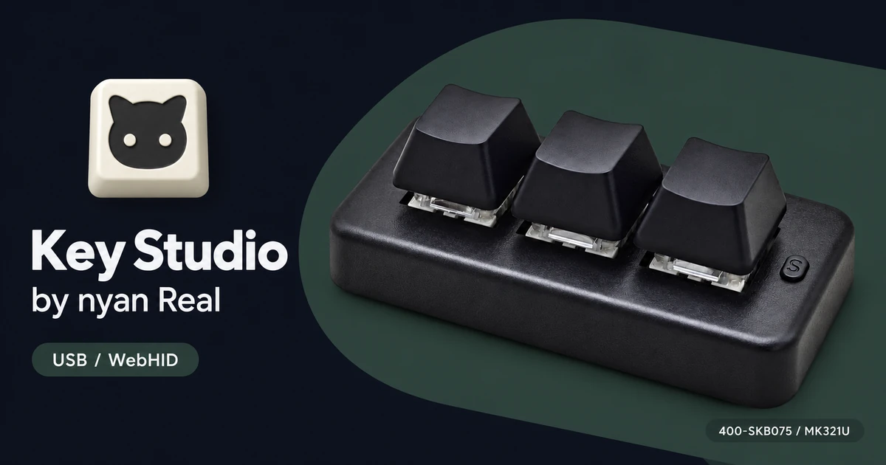

Key Studio by nyan Real
Key Studio

SANWA / PCsensorの対応キーボードやフットスイッチをUSBで接続し、キーやペダルの割り当てを変更するブラウザー用設定ツールです。インストールは不要です。
利用環境と対応機器
日本語と英語に対応します。初回はブラウザーの優先言語に合わせて表示し、左側の「表示言語 / Language」から切り替えられます。
PC版のChromeまたはEdgeと、USB接続した対応機器を使用します。Bluetooth対応モデルも設定時はUSBで接続してください。
対応機器には400-SKB075、MK321BT、400-MA214BKがあります。機種ごとの対応機能や検証状況は、Key Studioの接続前の画面で確認できます。
設定できること
- キーやペダルごとに、キーボード操作、マウス操作、文字列、メディア操作を割り当て。
- 対応機器のLED設定と、レイヤーの追加・削除。
- 設定ファイルのエクスポートとインポート。
利用できる機能は機種とファームウェアによって異なります。機器を接続せずにDEMOで画面を試すこともできます。
使い方
- 「機器を接続」から機器を選び、本体の設定を読み込みます。
- 変更したいキーやペダルを選び、割り当てを設定します。
- 「本体に書き込む」で変更を保存します。
設定データの読み書きはブラウザーとUSB接続した機器の間で行います。設定データをサーバーへ送信しません。